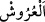
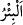
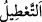
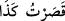
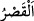
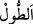
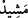
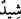
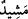
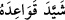
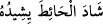
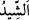
“Nitekim birçok memleket vardı ki, o memleket” halkı küfür ve mâsiyetlerle
“zulmetmekte iken, biz onları helâk ettik.” Bu ifâde, Allah’ın adâletini ve zulümden
münezzeh olduğunu beyan etmektedir. Çünkü onları ancak zulümleri sebebiyle helâk
edilmeye müstahak oldukları zaman helâk ettiğini haber vermiştir.
“Şimdi o ülkelerde duvarlar, (çökmüş) tavanların üzerine yıkılmıştır.” Yâni bu
ülkelerin binâları metrûk olduğu için tavanları yere yıkılmış, sonra duvarları çökmüş ve
tavanların üzerine düşmüştür. Âyetteki “__WORD__ tavanlar demektir. Çünkü kişiyi
gölgeleyen tavan, asma, güneşlik ve benzeri yüksek her şeye “arş” denir.
et-Te’vîlâtü’n-Necmiyye’de der ki: “Bu ifâde, zulüm ehlinin kalblerinin harablığına
işâret etmektedir. Çünkü zulüm, zâlimlerin yurtlarının harab olmasını gerektirir. Önce
zâlimin rahat vatanları harap edilir. O ise zâlimin kalbidir. Zâlimlerde galib olan
vahşet/yalnızlık, sînelerinin darlığından, ahlâklarının kötülüğünden ve zulmettikleri
kimselere olan hınçlarının fazlalığındandır. Hakikatte bunlar, zulümlerinden ötürü
kendilerine ulaşan cezâlar cümlesindendir. Zâlimlerin menzillerinin harâb olması bâzen
te’hir edilir, bâzen de çabuk gerçekleşir. Onların nefislerinin harâb olması ise
zulümlerinin uğursuzluğu sebebiyle ibâdetlerden geri kalmalarındadır. Nitekim Allah
Teâlâ “Şimdi o ülkelerde duvarlar, (çökmüş) tavanların üzerine yıkılmıştır.”
buyurmuştur. Onların kalblerinin harâb olması, özellikle namaz vakitlerinde ve halvet
zamanlarında kendilerini gafletin kaplaması iledir. Bu onlara te’hîr edilmeden ulaşır.
“Nice kullanılmaz hale gelmiş kuyular” “__WORD__ Aslında geçen kimseler düşmesin diye
üzeri örtülen kuyudur. “__WORD__ boşaltmak demektir. Âlemin kendisini en mükemmel
şekilde yaratan ve süsleyen bir yaratıcıdan boş olduğunu iddiâ eden kimseye de
“muattıl” denir. Yani, çöl ve sahrâlarda nice mâmûr; içlerinde su, yanlarında ve
üzerlerinde su alma âletleri bulunan kuyular vardır ki çevresindekilerin helâk olmaları
yüzünden kendilerinden su çekilmez halde terk edilmiştir.
“Ve (ıssız kalmış) ulu saraylar vardır.” “__WORD__ bir kısmını bir kısmına ekledim,
demektir. Kasr ismi de buradan gelmektedir. el-Kâmûs’ta der ki: “__WORD__
uzunluğun/uzatmanın (
ve
) tersidir. Ev ve taştan yapılmış her köşke denir. Şehir,
köy, kale ve köşk olarak elli yedi yere kasır denilmiştir. Bunların en ilginç olanı
Hemedan yakınlarında bir tek taştan yapılan Behram Gûr Kasrı idi.
“__WORD__ alçı ile binâ edilmiş demektir. Biz o sarayların sâkinlerini boşalttık. Şehir halkı
alçıyı “__WORD__ diye adlandırıyorlardı. “__WORD__ kelimesinin binâsı uzatılmış ve yükseltilmiş
demek olduğu da söylenir. Bu da yine birinci mânâya varır. Nitekim el-Müfredât’ta
böyle söylenmiştir.
“__WORD__ sanki alçı ile binâ etmiş gibi temellerini sağlam yaptı, demektir. el-
Kâmûs’ta der ki: “__WORD__ Duvarı sıva ile sıvadı. “__WORD__ kendisiyle duvarların
sıvandığı alçı ve benzeri şeylerdir.
Rivâyet edilir ki bu kuyu Sâlih (a.s.)’ın kendisine îmân eden ve Allah’ın kendilerini